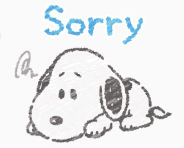
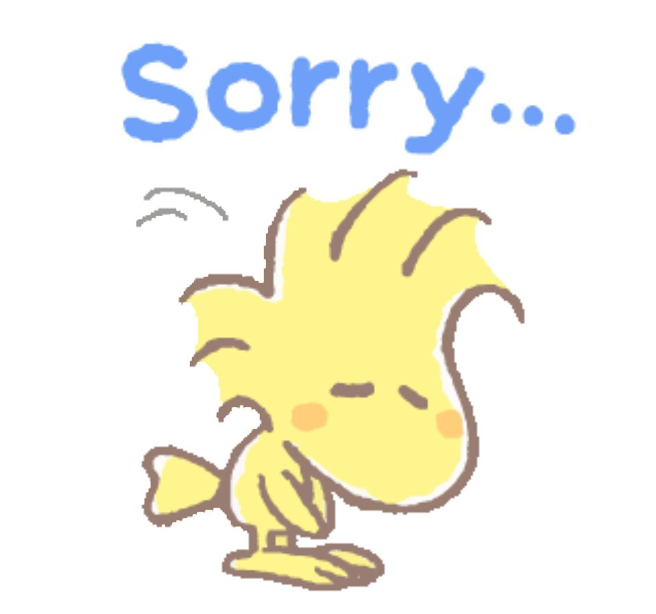

 You said we haven't been friends for long. And you're right. There is so much we don't know about each other. I have learned a lot about you the last couple of weeks and I have opened up in ways I haven't before. But I know there is still a lot for us to learn about each other. So the following might be a shock to you.
Your reaction to what I said scared me. And I found that weird and confusing. You have been kind to me in all the best ways and yet your reaction to what I did caused that emotion in me. Of course, this feeling stems from something beyond you. You did nothing except speak your mind and let me know how you felt, something I am glad you did. Needless to say, what I felt was out of your control and my doing.
I won't say much about this as this is something I have to work on and is not your problem. What I can and will say is that I found your reassurance to put my mind at ease. So thank you for that. I sometimes think things and need reassurance, which I had not realized.

Moving away from that...I know I have already apologized and you've forgiven me.
Despite that, I still want you to know that I hope my words did not stick or sting. But if they did I am sorry.
Also, you might think all this was not necessary. And I honestly have no idea if you're right
or not but I felt that I needed to do this. If not for you, for me. I suppose this is my way of trying to explain
or get something across. If you don't like it you can let me know.
With that said, there are somethings I would like to dive into if you are interested in knowing regarding me. Just click on the following link.
Following page: About Me